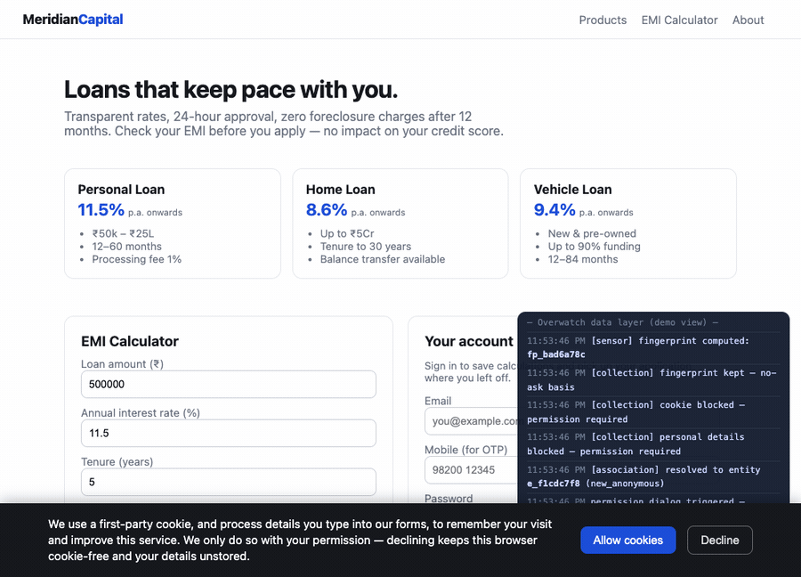

The problem
Reach and compliance keep pulling against each other.
You want to recognise customers and follow up with them. But what you collect, and whether
it's legal, is locked in code and vendor contracts. Push for performance and you take on risk;
cut the risk and you lose reach. Every change is an engineering project, and no one really
controls it.
The solution
The only platform that puts controlled, compliance-first access in your hands.
Overwatch gives you managed access to your users with compliance built in first. Every signal
and every use is a switch with a legal basis attached, so you tune reach and compliance yourself,
watch each stream live, and evolve both over time — no re-engineering, and a record that proves
the rules held.
Same site, unchanged. · One console. · Reach you can defend to a regulator.

A visitor consents → signals are captured → the console resolves them to a known customer, live.
source ↗
How it works
Your site is pointed through Overwatch. Nothing on the page changes.
Its traffic now runs through four stages you control from one screen.
1
SensePick what you collect: cookies, device fingerprint, form fields, IP.2
CollectSet what needs permission first, and what you may keep silently.3
AssociateMatch the visitor to a known record, or enrich them from a data source.4
AnalyseUse the result — aggregates freely, one person only within the rules.
Two lines are drawn and enforced here, not in your app code: nothing
is stored until it clears consent, and no one becomes a named, contactable person until they
are matched to a customer record and have agreed to it.
What you can do at each level of identification
A visitor moves up these levels as you learn more. Overwatch lets you
act at the highest level that's currently legal, and blocks the rest.
Anonymousa raw signal
A visit arrives. Nothing is kept yet.
nothing stored
Recognisedid only, no name
Signals settle into a stable id. Spot returning devices and count cohorts.
aggregate analytics
Knownmatched + agreed
The id is linked to a customer who consented for a stated purpose.
direct follow-up
Enrichedvendor-resolved
A data source adds context: loan profile, location, device risk.
fuller picture, still gated
Setting it up — six steps in the console
1Host your siteRuns exactly as it does today.
2Connect to OverwatchAdd one tag; traffic starts flowing through.
3DNS delegationOptional edge collection. Off by default.
4SensorsChoose the signals, and their legal basis.
5AssociatorsChoose the data sources that identify people.
6AnalyticsRead what the data tells you.
Sensors and associators, controlled in one place
Sensors decide what you collect. Each has an on/off switch and a legal basis: keep it silently
(legitimate interest) or only after asking (consent). Every source keeps a running count of signals
seen, kept, and blocked, plus consents asked, granted, and declined — a live compliance ledger you can export.
Associators decide who a visitor is. They plug into one slot and come in two kinds:
| Associator | What it does | Sources at national scale |
|---|
| Identity | Match an identifier (email, phone, PAN) to a known customer and link them. |
Account Aggregator (consent-based); credit bureaus (CIBIL, Experian, Equifax, CRIF); Karza / Perfios. |
| Enrichment | Add context to a visitor from an outside source. |
Working now: IP → city, ISP, network (ip-api.com). Device risk: Bureau.id. |
What you get as a lender
- Fewer dropped leads. Recognise a returning applicant across cleared cookies and new devices, and let them pick an unfinished application back up.
- Follow-ups that hold up. Reach out directly only when the person is identified and has agreed to it.
- Insight with no exposure. Funnel and cohort numbers run on anonymous ids, with no personal data in the mix.
- Better signal at decision time. Bring in consented profile, location, or device-risk context where it helps underwriting.
- A defensible record. The live tally shows what you collected and why — evidence for a regulator, not a promise.
What it won't do. Overwatch collects fully within the site it fronts, and only with a legal basis.
It runs inside the browser's sandbox, so it can't read a visitor's other tabs or other sites. Contact and
financial data at scale come only from consented, regulated sources. When someone asks to be erased, the
person is removed; the anonymous history stays.